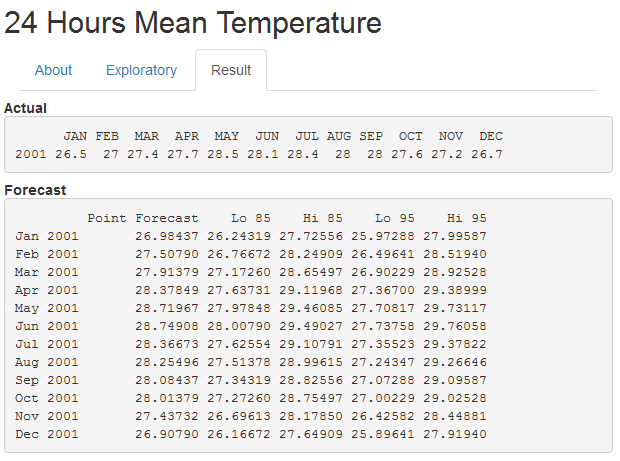

Developing Data Products

24 Hours Mean Temperature
About

Web Application
This web application is created by using Shiny
A web application framework for R
Please visit Shiny for more details

Data
Data use is "24 Hours Mean Temperature" downloaded from Data.gov.sg
Data.gov.sg is the primary portal for users to discover data published by the Singapore Government and its agencies.
The data used for analysis can be downloaded from here

Web Application
There are 3 tabs on the web application.
"About" - a short notes about the work of this site
"Exploratory" - allow you to select year range and present back a table plus some summaries
Summary such as Highest temperature is been show on the fly
## [1] 29.5
- "Result" - Will show the actual and forecast data plus a plot
Time Series
An ordered sequence of values of a variable at equally spaced time intervals.
The usage of time series models:
1. Obtain an understanding of the underlying forces and structure that produced the observed data
2. Fit a model and proceed to forecasting, monitoring or even feedback and feedforward control.
A tslm is used to fit linear models to time series including trend and seasonality components.
#convert dataframe to time series
tsdf <- reactive(ts(as.vector(t(as.matrix(subdf()))), start = c(1984, 1), end = c(input$Year,12), frequency=12))
#fit time series linear regression
fit <- reactive({
fitds <- tsdf()
tslm(fitds ~ trend + season)})
#forecast
f <- reactive(forecast(fit(), h=12,level=c(80,95)))
Result
The forecast resut is very close to the actual with less than 0.8 degree celsius
